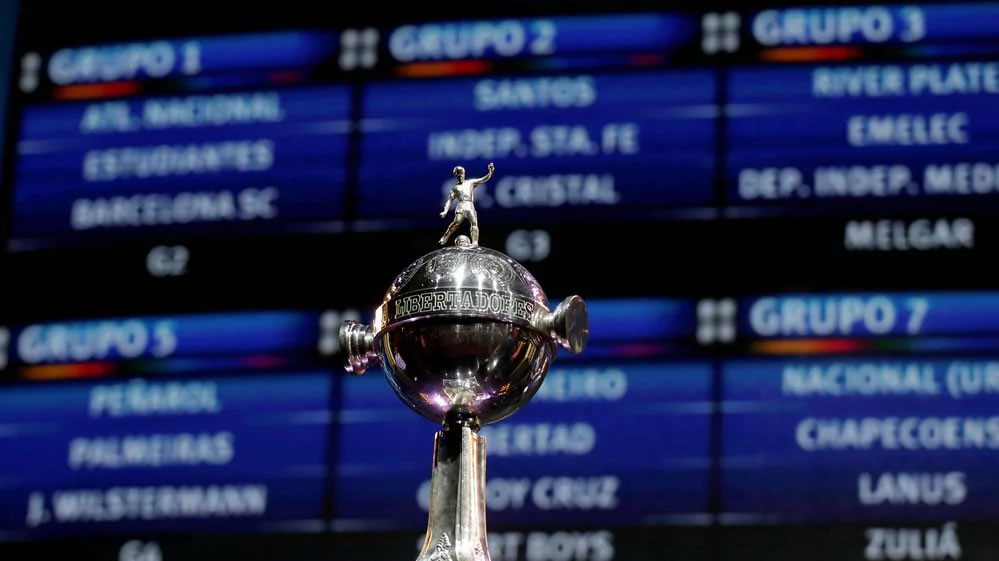

La tecnología llega a la actual edición de la Libertadores
por Joaquín Angeli
La Conmebol anunció la implementación del sistema VAR (asistencia arbitral por video) desde las semifinales de la actual Libertadores.

por Joaquín Angeli
La Conmebol anunció la implementación del sistema VAR (asistencia arbitral por video) desde las semifinales de la actual Libertadores.

por Laura Smasnatta
Hoy se abrió la venta al público de tickets, a través del sitio oficial de la FIFA. El proceso se dividirá en dos partes y los espectadores deberán solicitar una tarjeta de hincha 'Fan ID'

por Diego Di Marco
El 14/9/1923 el boxeador argentino enfrento en Nueva York a Jack Dempsey, uno de los mejores pesos pesados de la historia.

por Melina Morale
El Comité Organizador de los Juegos de la Juventud presentó su concepto de parques ante la 131a sesión del Comité Olímpico Internacional (COI) que se realizó en Lima. La ceremonia inaugural se realizará al aire libre.
| 3er Fecha | |||
|---|---|---|---|
| 1 | Tigre, 1pts Patronato, 3pts |
2 | Colón, 4pts Estudiantes, 3pts |
| 3 | Def. y Justicia, 4pts Únion, 4pts |
4 | Argentinos Juniors, 0pts Belgrano, 3pts |
| 5 | Newell's, 1pts Olimpo, 1pts |
6 | San Lorenzo, 2pts Arsenal, 0pts |
| 7 | Independiente, 4pts Lanús, 0pts |
8 | Talleres, 3pts Vélez, 3pts |